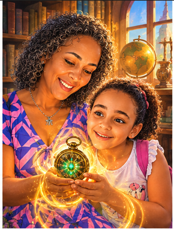
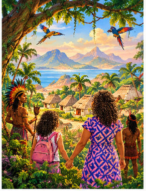
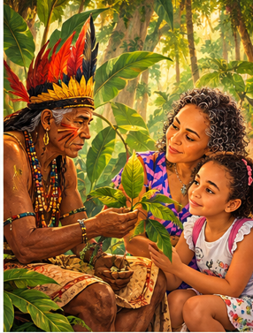
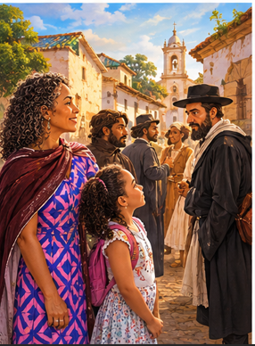
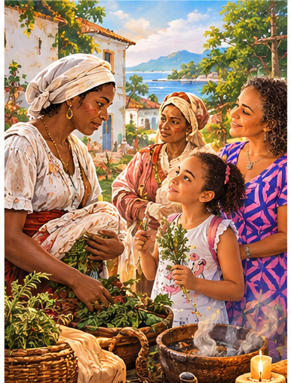
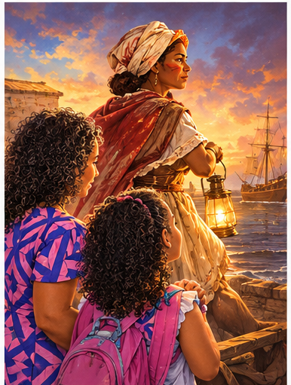
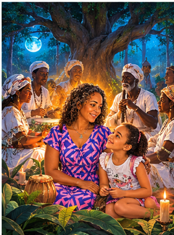
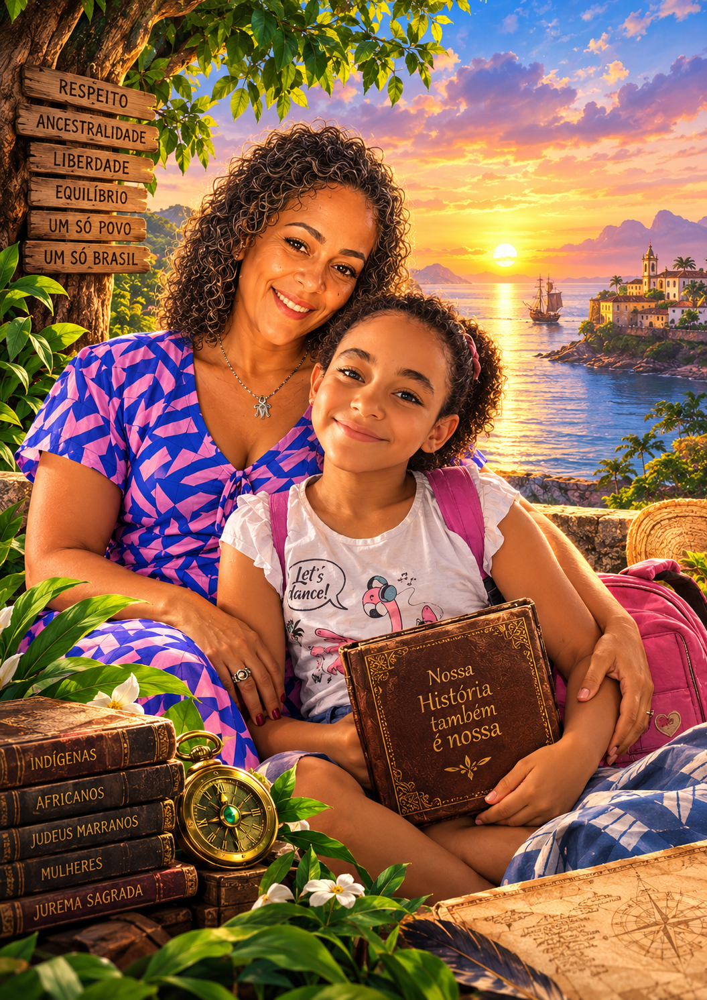

Em uma tarde quente e chuvosa no Recife, Angélica, uma curiosa aluna de 10 anos, encontra um antigo relógio de bolso com ponteiros de esmeralda na estante de sua professora de História. O que ela não imaginava é que a Professora Micheline esconde um grande segredo: ela é uma Guardiã Temporal da Memória. Juntas, elas acionam o relógio e embarcam em uma jornada transformadora através dos séculos XVI ao XVIII no Brasil colonial.
Durante a viagem, Angélica descobre que a formação do nosso país vai muito além dos livros didáticos tradicionais. Ela conhece a sabedoria ancestral dos povos indígenas pindorâmicos, a força e espiritualidade dos africanos escravizados, a resiliência dos judeus marranos perseguidos e a coragem das mulheres europeias parteiras e benzedeiras injustamente acusadas de bruxaria. Unidos pela dor, pelo desejo de cura e pela busca da liberdade, esses quatro povos encontram na mata nativa um ponto de união. Sob o abrigo da árvore sagrada, eles dão origem à Jurema Sagrada, uma tradição genuinamente brasileira calcada na força da natureza, no respeito aos ancestrais e na solidariedade comunitária.
Capítulo 1: O Segredo da Luz Azul

Era uma tarde típica de chuva no Recife. As gotas batiam ritmadas nas janelas da sala de aula enquanto Angélica organizava seu estojo. Ela olhava para o quadro negro cheia de dúvidas.
Professora Micheline... posso te fazer uma pergunta? Nosso livro diz que o Brasil começou quando os navios portugueses desembarcaram aqui em 1500. Mas... já não morava ninguém nesta terra antes?
A Professora Micheline sorriu. Ela caminhou até sua escrivaninha e abriu uma pequena caixa de madeira entalhada. De dentro, tirou um relógio de bolso antigo, feito de bronze, cujos ponteiros brilhavam como pequenas pedras de esmeralda.
Que pergunta maravilhosa, Angélica! A história oficial nem sempre conta tudo. A terra que hoje chamamos de Brasil já era repleta de vida, línguas e culturas muito antes de qualquer navio despontar no horizonte. Que tal vermos isso com nossos próprios olhos?
Ver com nossos próprios olhos? Como assim? — indagou Angélica, dando um passo para trás
.
Segure minha mão e não solte — instruiu Micheline com voz serena.
A professora girou a coroa do relógio três vezes para a esquerda. O ar ao redor começou a zumbir suavemente, e um brilho dourado e verde tomou conta da sala de aula. O chão parecia derreter suavemente sob seus pés. Em questão de segundos, a sala de concreto desapareceu por completo. Elas estavam pisando em terra úmida, cercadas por árvores gigantescas cujas copas tocavam o céu. O ar tinha cheiro de flor de maracujá e terra molhada.
Seja bem-vinda a Pindorama, Angélica. É assim que os povos nativos chamavam esta terra: a Terra das Palmeiras.
A história não começa quando alguém decide registrá-la, mas sim quando a vida e a cultura de um povo começam a brotar. Questionar e buscar a verdade nos ensina a respeitar quem esteve aqui antes de nós.
Capítulo 2: A Sabedoria dos Donos da Terra

Angélica olhou ao redor fascinada. Pássaros coloridos de todos os tamanhos voavam entre a folhagem, e o som dos rios ecoava como uma melodia suave.
Caminhando por uma trilha, Micheline e Angélica foram recebidas com sorrisos calorosos por uma comunidade indígena.
Um ancião de cabelos brancos e pintura corporal avermelhada feita de urucum se aproximou. Era o Pajé Tupinambá.
Sejam bem-vindas, caminantes do tempo disse ele, com voz serena.Vocês vêm de um tempo em que as pessoas esqueceram como conversar com a mata?
Um pouco, Pajé admitiu Angélica. Na minha cidade tudo é de concreto. Como vocês sabem tanto sobre as plantas?
O Pajé curvou-se ao lado de uma árvore de troncos espinhosos e casca avermelhada.

Esta é a Jurema explicou ele, tocando delicadamente as folhas que se fechavam ao toque.
Para nós, as plantas e árvores não são apenas objetos; são seres vivos com espíritos protetores, aos quais chamamos de Encantados. A árvore nos dá sombra, remédio, ensinamento e proteção. Nós não somos donos da terra; nós pertencemos a ela, como os rios e os pássaros.
Angélica sentou-se na relva e aprendeu a escutar o farfalhar das folhas. Pela primeira vez na vida, percebeu que a natureza não era algo para ser destruído ou vendido, mas um grande templo sagrado que sustentava toda a vida.
A terra não nos pertence; nós é que pertencemos a ela. Aprender a ouvir e respeitar a natureza é o primeiro passo para viver em harmonia com o mundo.
Capítulo 3: O Segredo dos Marranos

A Professora Micheline ajustou o relógio de bolso e o cenário mudou drasticamente. As grandes florestas deram lugar a vilas com casas de pedra, ruas estreitas e o cheiro forte de maresia e melaço de cana. Elas estavam no século XVII, na capitania de Pernambuco.
Onde estamos agora, professora? — perguntou Angélica, ajustando sua blusa.
Estamos em uma vila colonial. E vou te mostrar um grupo muito especial que veio para o Brasil buscando refúgio: os judeus marranos, também conhecidos como cristãos-novos.
Elas subiram silenciosamente as escadas de um casarão de madeira até o sótão. Pela fresta da porta, Angélica viu uma família reunida ao redor de uma mesa simples. Embora as janelas estivessem fechadas e cobertas por panos pesados para evitar que os vizinhos vissem, eles acendiam pequenas velas de cera de abelha e recitavam orações em voz baixa em um idioma antigo: o hebraico.
Por que eles estão se escondendo no escuro? — cochichou Angélica.
Na Europa, eles foram forçados a abandonar sua religião judaica sob ameaça de punição pela Inquisição
explicou Micheline em tom solene.
Muitos vieram para o Brasil buscando recomeço e liberdade. Para preservar suas tradições e sobreviver, eles precisaram aprender a adaptar seus rituais. Quando chegaram aqui, esses judeus começaram a interagir com os povos indígenas, aprendendo sobre os poderes de cura das plantas medicinais nativas e combinando esse conhecimento com a sua própria medicina e filosofia.
Angélica observou a coragem daquela família que, mesmo diante do perigo, mantinha acesa a chama de sua identidade e fé.
A identidade e a fé de um povo são tesouros da alma. Mesmo diante da intolerância, a busca pela liberdade e a capacidade de se adaptar mantêm viva a nossa essência.
Capítulo 4: A Força que Veio do Mar

O relógio de esmeraldas brilhou novamente e o som das ondas do mar deu lugar ao bater ritmado e profundo de grandes tambores de madeira. Elas surgiram nas imediações de uma grande fazenda de açúcar, próximo às sanzalas e às matas onde os negros libertos e fugitivos organizavam comunidades.
Angélica viu homens e mulheres de pele negra retinta dançando em círculo, cantando versos repletos de força e emoção.
Professora, eles estão trabalhando tão duro sob o sol... de onde vem essa força toda para cantar e dançar?
Angélica, as pessoas trazidas da África não vieram como meros trabalhadores. A Europa tentou apagar sua humanidade, mas eles eram reis, rainhas, sábios, engenheiros, parteiras e grandes mestres espirituais
explicou Micheline com orgulho na voz.
Eles trouxeram no coração o conceito de Axé
a energia vital que conecta todos os seres vivos , o culto aos Orixás e o profundo respeito aos Ancestrais.
Um homem idoso de olhar altivo, usando um colar de contas coloridas, acenou para as duas. Ele ensinou a Angélica que os cantos e as danças não eram apenas diversão, mas uma forma sagrada de manter a memória de sua terra natal, curar as dores do corpo e manter a esperança na liberdade.
Quando a dor é grande, minha jovem
disse o ancião
, o canto coletivo faz a alma voar para além das correntes.
A verdadeira força de um ser humano não está na violência, mas na capacidade de preservar sua dignidade, sua sabedoria e a união com seu povo mesmo nas situações mais difíceis.
Capítulo 5: As Mulheres do Sabá Europeu

Micheline girou o relógio mais uma vez. O ar ficou frio e uma neblina fina cobriu o porto colonial. Do mar, despontou uma caravela vinda da Europa. Delas desciam mulheres simples, vestindo xales rasgados, trazendo pequenas bolsas de couro amarradas na cintura.
Quem são elas, professora? Parecem tão cansadas e tristes...
notou Angélica.
Estas são mulheres europeias que foram perseguidas em suas terras natais sob a falsa acusação de "bruxaria"
revelou Micheline.
Naquela época, se uma mulher soubesse usar ervas para aliviar dores de parto, preparar chás para febre ou simplesmente fosse independente e sábia, a sociedade conservadora da época sentia medo dela. Muitas foram degredadas e enviadas à força para o Brasil.
Angélica acompanhou uma dessas mulheres, chamada Teresa. Ao chegar em solo brasileiro, em vez de se isolar, Teresa encontrou abrigo entre as parteiras indígenas e as benzedeiras negras.
Angélica viu Teresa trocando conhecimentos: a parteira indígena ensinava a usar as folhas da mata para fechar feridas, a mulher negra ensinava o poder das rezas e dos óleos, e Teresa compartilhava suas receitas medicinais trazidas da Europa.
Elas não eram bruxas maus como nos contos de fadas, não é?
perguntou a menina.
De forma alguma
sorriu Micheline.
Elas eram cientistas do seu tempo, protetoras da vida e da saúde de suas comunidades.
Nunca devemos julgar as pessoas pelos rótulos que o preconceito impõe. A empatia e a solidariedade entre os injustiçados transformam a dor em sabedoria e cura.
Capítulo 6:A Grande Reunião Sob a Frondosa Jurema

O relógio de Micheline emitiu um brilho intenso e constante, levando-as para o coração de uma floresta fechada e protegida, iluminada apenas pelo brilho do luar e por uma pequena fogueira.
Ali, Angélica testemunhou um acontecimento extraordinário. Ao redor de uma frondosa árvore de Jurema, estavam reunidos o Pajé Tupinambá, o ancião negro conhecedor dos ritmos e ervas, o judeu marrano com seus textos de medicina e a benzedeira europeia Teresa.
Eles não falavam exatamente a mesma língua, mas se entendiam pelo olhar e pelo respeito mútuo.
Veja, Angélica
sussurrou Micheline, emocionada.
Isolados, cada um deles sofria perseguição. Mas ali, sob o abrigo da Jurema, eles perceberam que todos buscavam a mesma coisa: a cura para o corpo, a proteção para a alma e a liberdade para existir.
Eles prepararam juntos uma infusão sagrada utilizando a casca da árvore da Jurema, combinando rezas em tupi, cantos em línguas africanas, bênçãos europeias e a sabedoria das ervas medicinais. O ambiente ao redor transbordava uma sensação de paz indescritível. Caboclos, Mestres e Encantados pareciam abençoar aquela união.
Eles criaram uma corrente invisível de proteção
disse Angélica, de olhos arregalados.
Uma grande família!
A diversidade é a nossa maior riqueza. Quando somamos nossos conhecimentos e respeitamos nossas diferenças, tornamo-nos invencíveis contra a injustiça.
Capítulo 7: O Nascimento da Jurema Sagrada
A Professora Micheline colocou as mãos nos ombros de Angélica enquanto a cerimônia na mata atingia seu ápice em um canto harmonioso e envolvente.
É neste encontro de sabedorias que nasce a Jurema Sagrada
explicou a professora.
Uma tradição espiritual e cultural verdadeiramente brasileira. Ela não nasceu em um único país ou de uma única pessoa; ela nasceu da fusão da cosmovisão indígena com o saber dos negros, a resiliência dos marranos e a benzedura das mulheres europeias.
É como uma grande colcha de retalhos, professora! Cada povo trouxe um pedaço bonito de pano para fazer um manto que protege a todos
comparou Angélica com entusiasmo.
Que metáfora perfeita, Angélica! A Jurema Sagrada se tornou o refúgio dos perseguidos, um lugar onde a figura dos Caboclos, dos Mestres e dos Encantados ensina que a verdadeira espiritualidade se faz com caridade, respeito à natureza e amor ao próximo.
Angélica sentiu um arrepio de alegria. Ela não via mais o Brasil como uma terra descoberta por acaso, mas como um encontro mágico e corajoso de muitos povos que aprenderam a resistir e a cultivar a esperança juntos.
As tradições mais bonitas e resistentes nascem do respeito mútuo e do amor. Valorizar nossas raízes culturais nos torna seres humanos mais conscientes e acolhedores.
Capítulo 8: Guardiões do Futuro
O relógio de bolso emitiu três cliques suaves. O ar ao redor girou suavemente e, em um piscar de olhos, o cheiro de mata deu lugar ao cheiro familiar de giz e papel. Angélica e a Professora Micheline estavam de volta à sala de aula no Recife. A chuva na janela tinha parado e um belo arco-íris cortava o céu da cidade.
Angélica olhou para o seu livro de história aberto na carteira, depois olhou para a Professora Micheline, que guardava o relógio mágico de volta na caixinha de madeira.
Professora... o Brasil não é apenas o que está escrito em duas ou três páginas do livro, não é?
Não mesmo, querida Angélica. A verdadeira história do nosso país foi escrita com os passos dos indígenas, o suor e o ritmo dos africanos, a coragem dos marranos e o amor das benzedeiras.
Angélica sorriu, pegou seu lápis e começou a desenhar uma grande árvore de Jurema com pessoas de todas as cores de mãos dadas ao seu redor.
Agora eu sei, professora. E sempre que eu olhar para uma árvore ou ouvir uma história antiga, vou me lembrar de que sou uma guardiã dessa memória!

Micheline piscou o olho para a aluna e disse:
E o futuro, minha cara Angélica, depende de pessoas como você, que aprendem com o passado para construir um mundo mais justo e respeitoso.
Conhecer a história verdadeira do nosso povo nos dá orgulho do nosso passado e responsabilidade sobre o nosso futuro. Somos todos guardiões da memória e do respeito ao próximo.
Créditos
Luiz MottObras sobre a Inquisição no Brasil Colonial e o estudo sobre benzedeiras, parteiras e mulheres acusadas de feitiçaria degredadas para o Nordeste brasileiro.
Anita Novinsky Estudos de referência sobre a história dos Judeus Cristãos-Novos (Marranos) no Brasil Colonial e seus processos de integração cultural e sobrevivência religiosa.
Stefania Capone & Cândido Procópio Ferreira de Camargo Pesquisas acadêmicas sobre as religiões afro-ameríndias, a transmutação ritual e a cosmologia do culto aos Encantados e Caboclos.
Clarice Mota & Maria do Carmo Tinôco Estudos etnobotânicos e históricos sobre o uso ritual da Mimosa hostilis (Jurema) entre os povos indígenas do Nordeste (como os Xukuru e Fulni-ô) e sua estruturação no Catimbó/Jurema Sagrada.